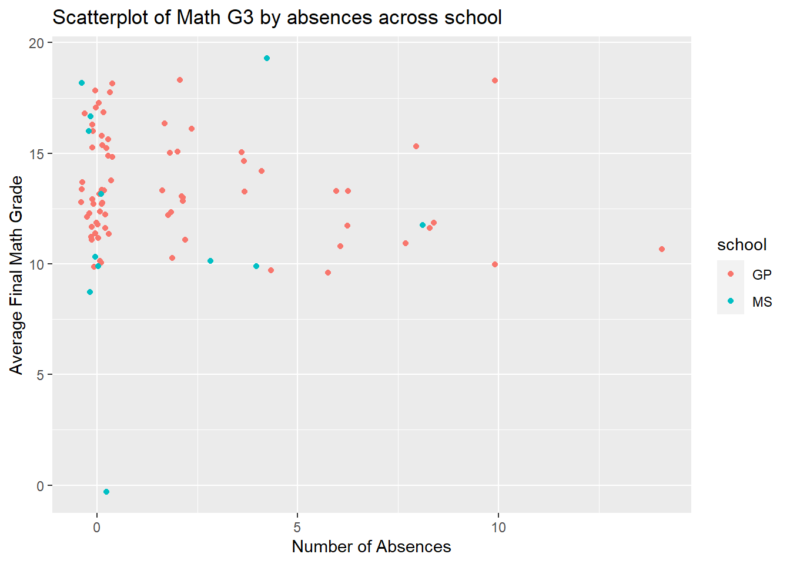
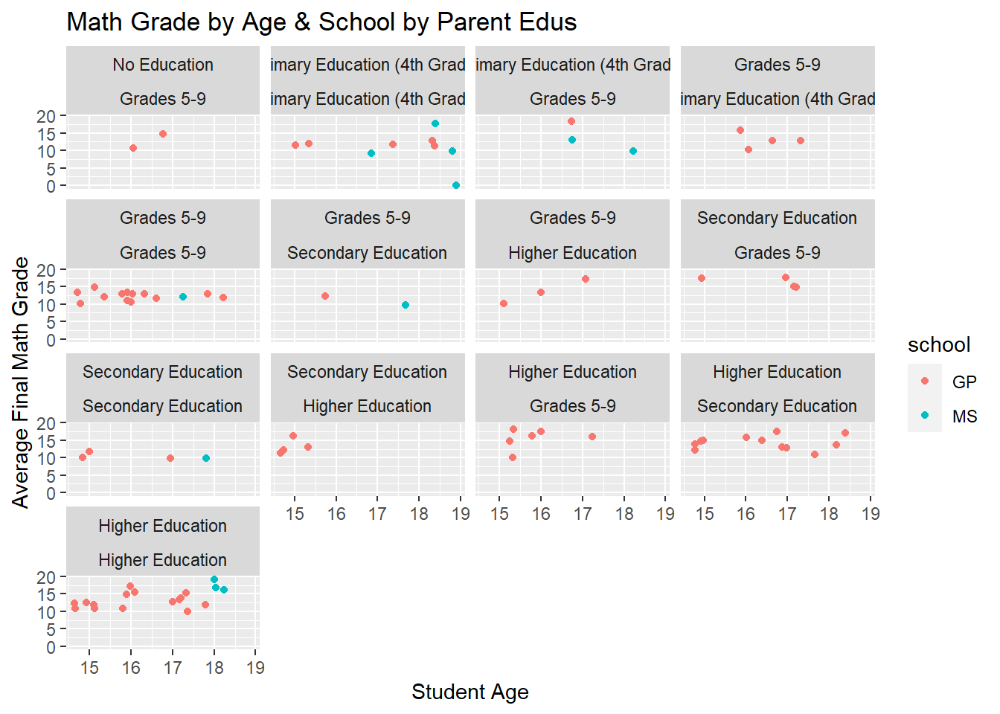
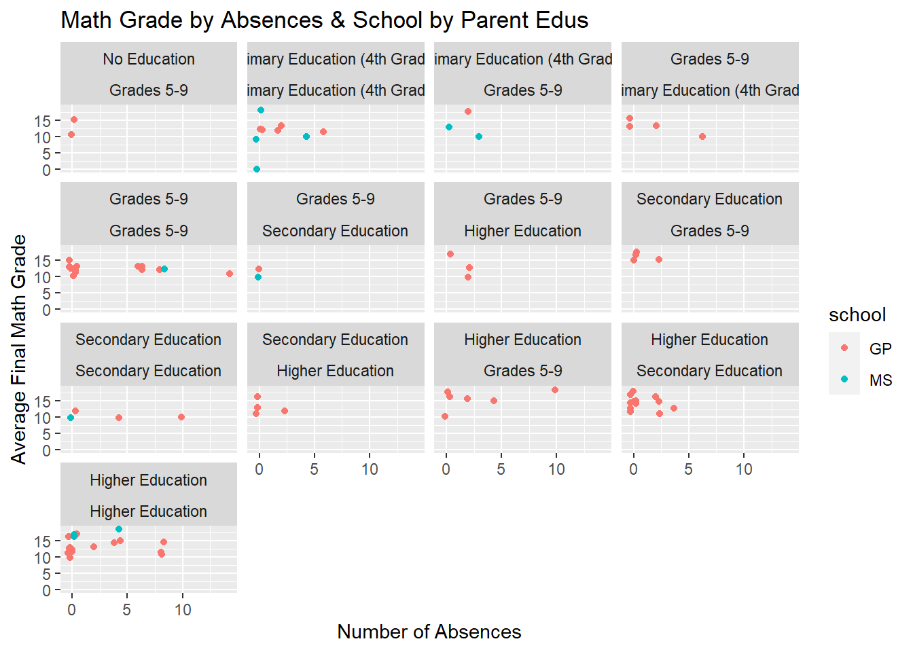

The following objects are masked from 'package:stats':
filter, lag
The following objects are masked from 'package:base':
intersect, setdiff, setequal, union
library('tidyr')library('ggplot2')
This homework will focus of exploratory data analyses using school data from the UCI machine learning databases. First, we start by accessing the data using the provided R code in the repository:
Reading in the data
# start by using their provided read-in coded1=read.table("student-mat.csv",sep=";",header=TRUE)d2=read.table("student-por.csv",sep=";",header=TRUE)d3=merge(d1,d2,by=c("school","sex","age","address","famsize","Pstatus","Medu","Fedu","Mjob","Fjob","reason","nursery","internet")) print(nrow(d3)) # 382 students ```
[1] 382
Now we’ll do the same thing but using our own methods:
# using the tidyverselibrary(tidyverse)
── Attaching core tidyverse packages ──────────────────────── tidyverse 2.0.0 ──
✔ forcats 1.0.0 ✔ readr 2.1.4
✔ lubridate 1.9.2 ✔ stringr 1.5.0
✔ purrr 1.0.1 ✔ tibble 3.2.1
── Conflicts ────────────────────────────────────────── tidyverse_conflicts() ──
✖ dplyr::filter() masks stats::filter()
✖ dplyr::lag() masks stats::lag()
ℹ Use the conflicted package (<http://conflicted.r-lib.org/>) to force all conflicts to become errors
df1 =read_delim("student-mat.csv", ";")
Rows: 395 Columns: 33
── Column specification ────────────────────────────────────────────────────────
Delimiter: ";"
chr (17): school, sex, address, famsize, Pstatus, Mjob, Fjob, reason, guardi...
dbl (16): age, Medu, Fedu, traveltime, studytime, failures, famrel, freetime...
ℹ Use `spec()` to retrieve the full column specification for this data.
ℹ Specify the column types or set `show_col_types = FALSE` to quiet this message.
df2 =read_delim("student-por.csv", ";")
Rows: 649 Columns: 33
── Column specification ────────────────────────────────────────────────────────
Delimiter: ";"
chr (17): school, sex, address, famsize, Pstatus, Mjob, Fjob, reason, guardi...
dbl (16): age, Medu, Fedu, traveltime, studytime, failures, famrel, freetime...
ℹ Use `spec()` to retrieve the full column specification for this data.
ℹ Specify the column types or set `show_col_types = FALSE` to quiet this message.
Warning in inner_join(df1, df2, by = c("school", "sex", "age", "address", : Detected an unexpected many-to-many relationship between `x` and `y`.
ℹ Row 79 of `x` matches multiple rows in `y`.
ℹ Row 79 of `y` matches multiple rows in `x`.
ℹ If a many-to-many relationship is expected, set `relationship =
"many-to-many"` to silence this warning.
The issue here is that we have an unexpected many-to-many relationship between our x and y datasets. This is not a good sign for our data uniqueness, and suggests we need to do a better job of grouping our variables in the inner_join() call. We can correct this by making sure we join by all variables except the five specified below, which will help us avoid variables with .x and .y specifiers.
# now do the inner_join on everything except G1, G2, G3, paid, and absencenames =colnames(df1) # use one of the single dfs as our list of namesnames =tibble(name = names) # set up for filteringreject =c("G1","G2","G3","paid","absence") # the ones we want to removenames = names |>filter(!name %in% reject) # now name_list has our row_namesnames = names$namecombined_df =inner_join(df1,df2, by = names)
Now we see that we only have 85 observations across our variables, which means that we were previously getting too many individuals within our groupings. Now we grab four variables of interest from both df1 (math), df2 (port), and combined. We’ll rename these dfs for ease of reference
mat = df1port = df2
Now, lets grab those four variables of interest and make them factors. We’ll go with family-related variables:
mat = mat |># mutate with factor to add new variables; add better labels for edumutate(Mjob_f =factor(Mjob),Fjob_f =factor(Fjob),Medu_f =factor(Medu, levels =c('0','1','2','3','4'), labels =c('No Education','Primary Education (4th Grade)', 'Grades 5-9','Secondary Education','Higher Education')),Fedu_f =factor(Fedu, levels =c('0','1','2','3','4'), labels =c('No Education','Primary Education (4th Grade)', 'Grades 5-9','Secondary Education','Higher Education')))levels(mat$Medu_f)
We see that with so many factor levels, it can be tricky to interpret the whole table at once. It might be more valuable to investigate smaller subsets of this at a time, such as the connection between jobs and education for each parent, and cross parents for both jobs and education levels. From these tables, it is interesting to note that we have no parents with No Education, and that we have a sizable number of intersections of both higher education mothers and fathers.
Categorical Variables Step 2:
Next we will make a conditional two-way table with table. We’ll do this twice, by subsetting the data and by using a three-way table and then subsetting it:
# first use filter() to select the values where Medu_F == "Secondary Education"sub_data =filter(combined_df, combined_df$Medu_f=="Secondary Education")table(sub_data$Fedu_f,sub_data$Fjob_f, useNA ="always")
# then do it again as a three-way table which we indexthree =table(combined_df$Medu_f, combined_df$Fedu_f, combined_df$Fjob_f, useNA ="always")three["Secondary Education",,] # index to make the table of Fedu_f and Fjob_f when Medu_f == "Secondary Education"
Cool - we see here that we can make the same tables from different methods. Here, we see that for the subset of the population for whom mothers have a secondary education, the most common type of work for the father is “Other”.
Categorical Variable Step 3
Now let’s do another contingency table using group_by() and summarize():
`summarise()` has grouped output by 'Medu_f'. You can override using the
`.groups` argument.
# A tibble: 4 × 6
Fedu_f `No Education` Primary Education (4…¹ `Grades 5-9`
<fct> <int> <int> <int>
1 Grades 5-9 2 3 14
2 Primary Education (4th Gra… NA 9 4
3 Secondary Education NA NA 2
4 Higher Education NA NA 3
# ℹ abbreviated name: ¹`Primary Education (4th Grade)`
# ℹ 2 more variables: `Secondary Education` <int>, `Higher Education` <int>
Our table shows us that there is high overlap in education groups for both parents. For example, we see a bunch of higher education mothers and fathers, as well as numerous Grades 5-9 mothers and fathers. There is also a fair number of Higher Education fathers with Secondary Education mothers.
Categorical Variable Step 4
Now we will do some plots!
library(ggplot2)# Filled bar plot showing Father education by job areag =ggplot(combined_df, aes(x = Mjob_f, fill = Medu_f))g +geom_bar() +labs(x ="Father's Job", y ="Counts", title ="Father Education across Jobs", fill ="Father Education Level")
Very cool, we see that all teachers have higher education backgrounds. Let’s go ahead and try a side-by-side plot as well:
# Side-by-side bar plot showing Father job and educationg =ggplot(combined_df, aes(x = Mjob_f, fill = Medu_f))g +geom_bar(position="dodge") +labs(x ="Father's Job", y ="Counts", title ="Father Education across Jobs", fill ="Father Education Level")
We now have another plot showing this same information, but in an alternate method. This version makes it easier to get the count data for each education level in each job, and shows just how many Grades 5-9 educated fathers work in Other areas.
Numeric Variables Step 1:
We can now move onto our numeric variables. Let’s do three summaries of mean and sd for three vars (age, absences, and Portuguese G3) for the whole data and after subsetting to only include females:
We see that things look pretty similar between the whole samples and female only sample, but the G3 for Portuguese is a bit lower (~0.7) in the female only grouping. Since the SD is larger than 4 though, this might just be chance variation.
Numerical Variables Step 2
Now let’s do the same variables but including a grouping variables:
# grouping by sexcombined_df |>group_by(sex) |>summarize(mean_age =mean(age, na.rm =TRUE),sd_age =sd(age, na.rm =TRUE),mean_absences =mean(absences, na.rm =TRUE),sd_absences =sd(absences, na.rm =TRUE),mean_portG3 =mean(G3.y, na.rm =TRUE),sd_portG3 =sd(G3.y, na.rm =TRUE),.groups ='drop') # drop grouping so we can use a different grouping on our next run
# A tibble: 2 × 7
sex mean_age sd_age mean_absences sd_absences mean_portG3 sd_portG3
<chr> <dbl> <dbl> <dbl> <dbl> <dbl> <dbl>
1 F 16.5 1.07 1.92 3.15 13.4 2.44
2 M 16.3 1.29 1.86 2.85 12.9 3.45
Same general pattern here, things look pretty similar. The SD on the Portuguese G3 is larger in females, but overall things look similar.
Numerical Variable Step 3
Now we do it again across two grouping variables - we’ll choose sex and school:
# A tibble: 4 × 8
sex school mean_age sd_age mean_absences sd_absences mean_portG3 sd_portG3
<chr> <chr> <dbl> <dbl> <dbl> <dbl> <dbl> <dbl>
1 F GP 16.3 1.04 2.05 3.19 13.6 2.25
2 F MS 17.6 0.535 1.14 3.02 12.7 3.55
3 M GP 15.9 0.995 1.8 2.99 13.2 2.43
4 M MS 18.4 0.548 2.2 2.05 11 7.28
With this grouping, looks like males in the MS school didn’t do as well on their portoguese as males in GP! The SD for the MS school is higher and we have fewer participants, but an interesting observation.
Numeric Variable Step 4
Next up, we’ll make a correlation matrix across all our numeric variables:
A lot of info there, but we can trace the 1.000 correlation down the diagonal of the matrix to see that everything is in order.Fun to see that the correlation between Portuguese grades 1, 2, and 3 (G1.y, G2.y,G3.y) appear lower than the correlations between the Math grades (G1.x, G2.x,G3.x).
Numeric Variable Step 5
Next up, we’ll do a histogram, kernel density plot, and boxplot for two num vars across one categorical var. We’ll do G3.x and G3.y across school:
# histogram for first num varg =ggplot(combined_df, aes(x = G3.x, fill = school))g +geom_histogram(position ="dodge", binwidth =0.5) +labs(title ="Histogram of Math G3 by school", x ="G3 Math", y ="Frequency", fill ='School')
# now the histogram for the second num varg =ggplot(combined_df, aes(x = G3.y, fill = school))g +geom_histogram(position ="dodge", binwidth =0.5) +labs(title ="Histogram of Portuguese G3 by school", x ="G3 Portuguese", y ="Frequency", fill ='School')
# Smoothed density plot for math gradesg =ggplot(combined_df, aes(x = G3.x, fill = school))g +geom_density(alpha =0.5) +labs(title ="Smoothed Density of Math G3 by school", x ="G3 Math", y ="Density", fill ='School')
# Smoothed density plot for math gradesg =ggplot(combined_df, aes(x = G3.y, fill = school))g +geom_density(alpha =0.5) +labs(title ="Smoothed Density of Portuguese G3 by school", x ="G3 Portuguese", y ="Density", fill ='School')
# botplot for portugueseg =ggplot(combined_df, aes(y = G3.x, x = school, fill = school))g +geom_boxplot() +labs(title ="Boxplot of Portuguese G3 by school", x ="G3 Portuguese", y ="Average Grade")
# botplot for mathg =ggplot(combined_df, aes(y = G3.y, x = school, fill = school))g +geom_boxplot() +labs(title ="Boxplot of Math G3 by school", x ="G3 Math", y ="Average Grade")
Again, lots of information here! In general, we can see that there do appear to be some differences in how schools perform. School GP appears to have better math scores than MS, although we would definitely want to run some statistical comparisons before we make any conclusions from the EDA alone.
Numeric Variable Step 6
Now we will do two scatterplots of a G3 to other numerical variables, with jitter and a categorical variable added for color:
# we'll focus on math because math is awesome!# scatter plot number 1, 2nd var is ageg =ggplot(combined_df, aes(y = G3.y, x = age, color = school))g +geom_point(position ='jitter') +labs(title ="Scatterplot of Math G3 by age across school", x ="Student Age", y ="Average Final Math Grade")
# And second plot with second var as absencesg =ggplot(combined_df, aes(y = G3.y, x = absences, color = school))g +geom_point(position ='jitter') +labs(title ="Scatterplot of Math G3 by absences across school", x ="Number of Absences", y ="Average Final Math Grade")

Two interesting observations here! From scatterplot one, it looks like the MS school has older students, which may account for why their math scores are higher.
Second, the impact of absences on the data is unclear. There are several data points that have a G3 math score of zero, and after consulting the online source, there are no missing data points for this Final Grade. This means that some students got a 0 final grade, with 0 absences, which seems strange!
Numeric Variable Step 7
Now we will repeat with a facet wrap to get plots at each categorical level of a new variable:
# scatter plots with facet wrap for all levels of Medu g =ggplot(combined_df, aes(y = G3.y, x = age, color = school))g +geom_point(position ='jitter') +labs(title ="Math Grade by Age & School by Mother Edu", x ="Student Age", y ="Average Final Math Grade") +facet_wrap(~Medu_f)
# and again for absencesg =ggplot(combined_df, aes(y = G3.y, x = absences, color = school))g +geom_point(position ='jitter') +labs(title ="Math Grade by Absences & School by Mother Edu", x ="Number of Absences", y ="Average Final Math Grade") +facet_wrap(~Medu_f)
These plots are difficult to interpret any large takeaways from without further analyses, but we can see that there aren’t many students whose mother’s had no education!
Numeric Variable Step 8
Finally, we do this one more time with facet wrap by two variables:
# scatter plots with facet wrap for all levels of Medu & Fedu g =ggplot(combined_df, aes(y = G3.y, x = age, color = school))g +geom_point(position ='jitter') +labs(title ="Math Grade by Age & School by Parent Edus", x ="Student Age", y ="Average Final Math Grade") +facet_wrap(~Medu_f*Fedu_f)

# and again for absencesg =ggplot(combined_df, aes(y = G3.y, x = absences, color = school))g +geom_point(position ='jitter') +labs(title ="Math Grade by Absences & School by Parent Edus", x ="Number of Absences", y ="Average Final Math Grade") +facet_wrap(~Medu_f*Fedu_f)

Again, very hard to see trends from this alone. It is interesting to see that the largest number of students with parents who both have higher education. Overall, these will be handy graphs to have if we were interesting in identifying interesting trends in this data set in the future!